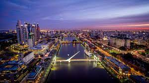

Debido a la gran centralización que existe en la Argentina, muchos sucesos relativos a la historia de la ciudad de Buenos Aires coinciden con la historia del país. Por esta razón, aquí se trata principalmente el desarrollo institucional de la ciudad, desde su fundación hasta la sanción de la Constitución de la ciudad de Buenos Aires, incluyendo su nombramiento como capital del Virreinato del Río de la Plata y su federalización. .
El Cementerio de la Recoleta es un famoso cementerio de la ciudad de Buenos Aires, Argentina. Está ubicado en el barrio de Recoleta y contiene las tumbas de personas muy reconocidas. Se inauguró el 17 de noviembre de 1822, durante la gobernación del brigadier general Martín Rodríguez, siendo ministro de Gobierno Bernardino Rivadavia. Se transformó así en el primer cementerio público de la ciudad. Fue diseñado por Próspero Catelin, reservándose el gobierno parcelas para personalidades ilustres en la formación del Estado nacional. En 1880, Torcuato de Alvear—el primer intendente de la ciudad de Buenos Aires—encomendó al arquitecto Juan Antonio Buschiazzo para la remodelación del cementerio. Se rodeó con un muro de ladrillos, se pavimentaron sus calles y se construyó una entrada de estilo neoclásico.
En la solar donde hoy se encuentra el Obelisco estaba emplazada la iglesia dedicada a San Nicolás de Bari, que se decidió demoler para la construcción de la Avenida 9 de Julio. En la torre de esa iglesia fue izada oficialmente por primera vez en Buenos Aires, en 1812, la bandera argentina. Dicha circunstancia se recuerda en una de las inscripciones del lado norte del Obelisco.Se decía que el bloque radical de las cámaras presentaría un proyecto para que en ese lugar se erigiera el monumento a Hipólito Yrigoyen. Pero, el 3 de febrero de 1936, a 400 años de la denominada «primera fundación de Buenos Aires», el intendente Mariano de Vedia y Mitre, nombrado en la presidencia de Agustín Pedro Justo, firmó un decreto que generaría enconadas polémicas, para la «ejecución de una obra de carácter extraordinario, que señale al pueblo de la República la verdadera importancia de aquella efeméride. Que no existe en la ciudad ningún monumento que simbolice el homenaje de la Capital de la Nación entera.» Se le encargó entonces al arquitecto Alberto Prebisch la construcción de un obelisco que se realizó en solo sesenta días: la obra comenzó el 20 de marzo de 1936 y fue inaugurada el 23 de mayo de ese año.
Se trata de una obra pensada por el empresario Alberto González, quien fue miembro del Grupo Madero y donó el dinero para su construcción. González se la encargó al arquitecto e ingeniero español Santiago Calatrava. Fue fabricado por la empresa Urssa en la ciudad de Vitoria, en el País Vasco, debido a que el acero con el que se lo construyó no se fabrica en Argentina.El diseño es una síntesis de la imagen de una pareja bailando tango.El costo de la obra fue de unos seis millones de dólares que fueron donados por Alberto González. Fue realizado en Vitoria, España, por la empresa Urssa iniciada la construcción del puente en 1998. Fue inaugurado el 20 de diciembre de 2001.En 2022 se renovó por primera vez el piso del puente, usando para ello madera plástica realizada con botellas de amor donadas en los puntos verdes de la ciudad.
La plaza de Mayo de la Ciudad de Buenos Aires en Argentina, también denominada desde 1996 Ciudad Autónoma de Buenos Aires, es la plaza que se encuentra frente a la Casa Rosada, sede del Poder Ejecutivo Nacional. Fue creada en 1884, como resultado de la unión de las plazas de la Victoria y del Fuerte, al demolerse una construcción llamada Recova Vieja, que las separaba. Está ubicada en el sitio donde se realizó la segunda fundación de la Ciudad en 1580.